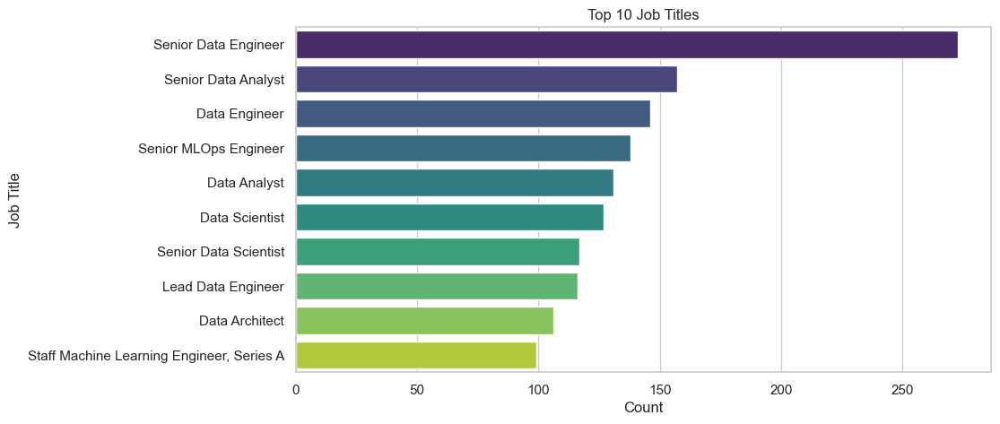
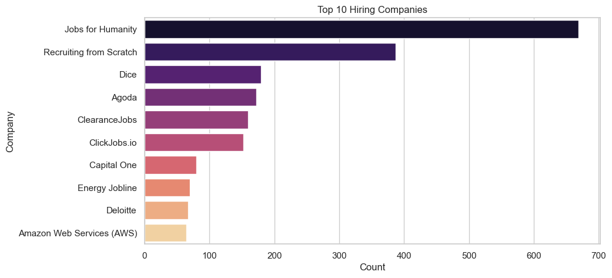
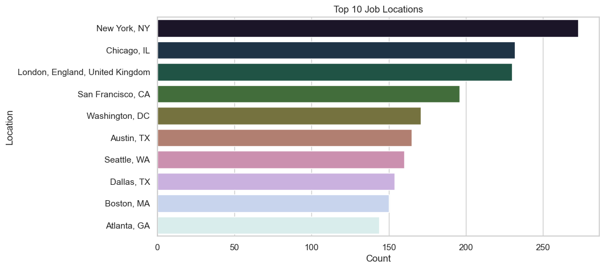

# load the necessary libraries and configure the settings for data visualizations
import pandas as pd
import matplotlib.pyplot as plt
import seaborn as sns
# viz. configurations
sns.set(style="whitegrid") # improves plots readability
plt.rcParams["figure.figsize"] = (10, 5) # this configuration is best suitable for blog posts like thisData Science Job Postings 2024 (Part I)
Data Preparation & Explanatory Data Analysis
A hands-on walkthrough using a LinkedIn-based dataset to clean and explore job titles, companies, and locations.
📥 How to Get the Dataset
This notebook uses the Data Science Job Postings & Skills (2024) dataset, authored by asaniczka, which contains real job listings scraped from LinkedIn. You can download it in two ways:
Option 1: From Kaggle
- Visit the dataset page here:
👉 Kaggle - Data Science Job Postings and Skills
Option 2: Use Python via kagglehub
If you’re using Python, follow my step-by-step guide to downloading Kaggle datasets using the new kagglehub library:
👉 How to Download Datasets from Kaggle Using kagglehub
Once you’ve downloaded the dataset, make sure the following CSV files are in your working directory:
job_posting.csvjob_skills.csvjob_summary.csv
🗂️ Dataset Overview
This notebook is part of a multi-post series analyzing a dataset of real Data Science job postings collected from LinkedIn in 2024.
In this first part, we focus on exploring the structure of the job_posting.csv file and performing basic cleaning and exploratory analysis.
Columns overview:
job_link: direct link to the job postingjob_title: job titlecompany: company namejob_location: job location (city/state/country)first_seen: when the job was first scraped- Additional metadata: processing status flags
Our goal today is to clean the data and explore job titles, companies, and job locations.
Load the necessary libraries and (optional) set the preferred configurations for your data visualizations.
Load your data:
df = pd.read_csv("job_postings.csv")
df.head(3)| job_link | last_processed_time | last_status | got_summary | got_ner | is_being_worked | job_title | company | job_location | first_seen | search_city | search_country | search_position | job_level | job_type | |
|---|---|---|---|---|---|---|---|---|---|---|---|---|---|---|---|
| 0 | https://www.linkedin.com/jobs/view/senior-mach... | 2024-01-21 08:08:48.031964+00 | Finished NER | t | t | f | Senior Machine Learning Engineer | Jobs for Humanity | New Haven, CT | 2024-01-14 | East Haven | United States | Agricultural-Research Engineer | Mid senior | Onsite |
| 1 | https://www.linkedin.com/jobs/view/principal-s... | 2024-01-20 04:02:12.331406+00 | Finished NER | t | t | f | Principal Software Engineer, ML Accelerators | Aurora | San Francisco, CA | 2024-01-14 | El Cerrito | United States | Set-Key Driver | Mid senior | Onsite |
| 2 | https://www.linkedin.com/jobs/view/senior-etl-... | 2024-01-21 08:08:31.941595+00 | Finished NER | t | t | f | Senior ETL Data Warehouse Specialist | Adame Services LLC | New York, NY | 2024-01-14 | Middletown | United States | Technical Support Specialist | Associate | Onsite |
df.info()<class 'pandas.core.frame.DataFrame'>
RangeIndex: 12217 entries, 0 to 12216
Data columns (total 15 columns):
# Column Non-Null Count Dtype
--- ------ -------------- -----
0 job_link 12217 non-null object
1 last_processed_time 12217 non-null object
2 last_status 12217 non-null object
3 got_summary 12217 non-null object
4 got_ner 12217 non-null object
5 is_being_worked 12217 non-null object
6 job_title 12217 non-null object
7 company 12217 non-null object
8 job_location 12216 non-null object
9 first_seen 12217 non-null object
10 search_city 12217 non-null object
11 search_country 12217 non-null object
12 search_position 12217 non-null object
13 job_level 12217 non-null object
14 job_type 12217 non-null object
dtypes: object(15)
memory usage: 1.4+ MB🧹 Step 1: Drop Irrelevant Columns
As we will not use all the columns, we will now drop the unnecessary ones, reducing thus the volume of the dataset:
# drop unnecessary columns
df_cleaned = df.drop(columns=[
'job_link', 'last_processed_time', 'last_status',
'got_summary', 'got_ner', 'is_being_worked'
])🚿 Step 2: Clean Duplicates and Missing Values
Let’s now clean our dataset from duplicate values and look for missing values.
# drop duplicates
df_cleaned = df_cleaned.drop_duplicates()# count missing values
df_cleaned.isnull().sum()job_title 0
company 0
job_location 0
first_seen 0
search_city 0
search_country 0
search_position 0
job_level 0
job_type 0
dtype: int64We found one missing value in job_location. This time we will just remove the missing row with teh missing value. In other contexts, it makes sense to deal with misisng values in other ways. You can read about methods to deal with missing values here: https://www.geeksforgeeks.org/ml-handling-missing-values/.
# drop missing values
df_cleaned = df_cleaned.dropna()📊 Step 3: Explore the Data
We will now have a deeper look at teh dataset, in particular focusing on:
- job titles
- companies
- location
Let’s count the number of entries for each job title, company and location:
# count entriep per job title, diplay the first 10
df_cleaned['job_title'].value_counts().head(10)job_title
Senior Data Engineer 273
Senior Data Analyst 157
Data Engineer 146
Senior MLOps Engineer 138
Data Analyst 131
Data Scientist 127
Senior Data Scientist 117
Lead Data Engineer 116
Data Architect 106
Staff Machine Learning Engineer, Series A 99
Name: count, dtype: int64# count the entries for each company
df_cleaned['company'].value_counts().head(10)company
Jobs for Humanity 669
Recruiting from Scratch 387
Dice 179
Agoda 172
ClearanceJobs 159
ClickJobs.io 152
Capital One 80
Energy Jobline 70
Deloitte 67
Amazon Web Services (AWS) 64
Name: count, dtype: int64# count teh entries for each location
df_cleaned['job_location'].value_counts().head(10)job_location
New York, NY 273
Chicago, IL 232
London, England, United Kingdom 230
San Francisco, CA 196
Washington, DC 171
Austin, TX 165
Seattle, WA 160
Dallas, TX 154
Boston, MA 150
Atlanta, GA 144
Name: count, dtype: int64We can now visualize the results:
# viz. job titles
top_titles = df_cleaned['job_title'].value_counts().head(10)
sns.barplot(x=top_titles.values, y=top_titles.index, hue=top_titles.index, palette="viridis", legend=False)
plt.title("Top 10 Job Titles")
plt.xlabel("Count")
plt.ylabel("Job Title")
plt.show()
# viz. top 10 hiring companies
top_companies = df_cleaned['company'].value_counts().head(10)
sns.barplot(x=top_companies.values, y=top_companies.index, hue=top_companies.index, palette="magma", legend=False)
plt.title("Top 10 Hiring Companies")
plt.xlabel("Count")
plt.ylabel("Company")
plt.show()
# top 10 job locations
top_locations = df_cleaned['job_location'].value_counts().head(10)
sns.barplot(x=top_locations.values, y=top_locations.index, palette="cubehelix", hue=top_locations.index, legend=False)
plt.title("Top 10 Job Locations")
plt.xlabel("Count")
plt.ylabel("Location")
plt.show()
Main Takeouts
We have seen that:
- The Top 3 Job Titles in data Science are: Senior Data Engineer, Senrios Data Analyst, and Data Engineer.
- The top 3 Companies are: Jobs For Humanity, Recruiting from Scratch, and Dice.
- The top 3 Locations are: New York, Chicago, and London.
This analysis has its clear limitation, and may be highly biased by the language of the job search, i.e., English. So, be carefull when drawing conclusions from these data!
🧭 Next Steps
In the next post, we’ll explore the job_skills.csv file to identify:
- The most frequently required skills
- Skill trends by job title or level
- Keywords and technologies in demand for Data Scientists
📌 Stay tuned!